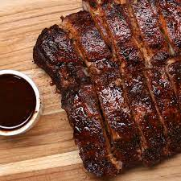

üÖ∏üÖΩüÜÉüÜÅüÖæüÖ≥üÜÑüÖ≤üÜÉüÖ∏üÖæüÖΩ
Barbecue or barbeque (informally BBQ in the UK and US, barbie in Australia and braai in South Africa) is a term used with significant regional and national variations to describe various cooking methods which use live fire and smoke to cook the food. The term is also generally applied to the devices associated with those methods, the broader cuisines that these methods produce, and the meals or gatherings at which this style of food is cooked and served. The cooking methods associated with barbecuing vary significantly but most involve outdoor cooking. The various regional variations of barbecue can be broadly categorized into those methods which use direct and those which use indirect heating.Indirect barbecues are associated with North American cuisine, in which meat is heated by roasting or smoking over wood or charcoal. These methods of barbecue involve cooking using smoke at low temperatures and long cooking times (several hours). Elsewhere, barbecuing more commonly refers to the more direct application of heat, grilling of food over hot coals or gas. This technique is usually done over direct, dry heat or a hot fire for a few minutes. Within these broader categorizations are further national and regional differences.░r░e░c░i░p░e░s░
|
Honey BBQ Chicken Wings |
|
Ingredientsfor 20 wings 1 cup flour(125 g) 1 teaspoon chili powder 1 teaspoon kosher salt 1 teaspoon black pepper, freshly ground 1 teaspoon paprika 1 teaspoon garlic powder 20 chicken wings, or drumettes 1 cup BBQ sauce(290 g) ½ cup honey(170 g) PreparationPreheat oven to 425°F (220°C). In a bowl, combine flour, chili powder, salt, pepper, paprika, and garlic powder. Coat the wings in the flour evenly, shaking off any excess. Place the floured wings on a parchment paper–lined baking sheet and spread them out in a single layer. Bake for 45 minutes, flipping halfway through, until skin is crispy and golden brown. Preheat oven to 500°F (250°C). In a separate bowl, combine the BBQ sauce and the honey. Stir the cooked wings in the sauce and coat them evenly. Place the coated wings back onto the baking sheet and spread them in a single layer. Bake for 8 to 10 minutes, until sauce is bubbly and caramelized. Cool, then serve. |
|
|  |
Slow Cooker Ribs |
Ingredientsfor 4 servings 2 cups BBQ sauce(580 g) ¼ cup brown sugar(55 g) 4 tablespoons apple cider vinegar 3 teaspoons dried oregano 1 teaspoon worcestershire sauce 1 tablespoon cayenne pepper 1 tablespoon chili powder 3 lb baby back pork rib(1.3 kg) salt, to taste pepper, to taste pepper, to taste preparationCombine bbq sauce, brown sugar, cider vinegar, oregano, Worcestershire sauce, cayenne pepper, and chili powder in a small bowl. Salt and pepper the ribs. Place ribs in slow cooker, and cover in sauce. Cook low and slow for eight hours or high for four hours. After the ribs are done, spoon the bbq sauce in the slow cooker over the ribs before removing. Cut the ribs, serve with bbq sauce. |